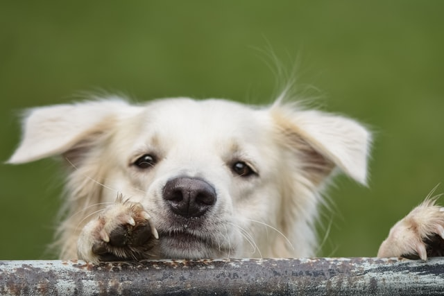
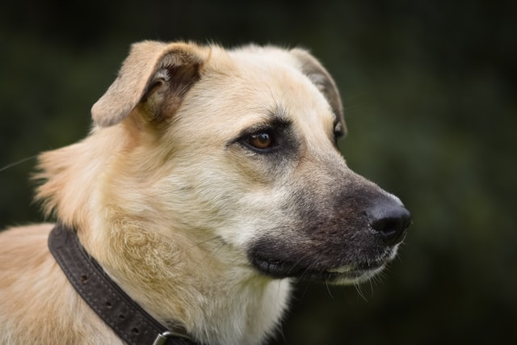

Der Haushund ist ein Haustier und wird als Heim und Nutztier gehalten.Seine wilde Stammform ist der Wolf, dem er als Underhalt zugeordnet wird.Sie frissem diese Essen:
Der Haushund stammt vom Wolf ab: Bei machen Rassen wie etwa dem Deutschen Schäferhund ist das auch noch deutlich zu sehen. Ansonsten aber sehen sie sehr verschieden Hunderassen gleicht keine der anderen:Ein kleiner Chihuahua wiegt 600 Gram: ein Irischer Wofshund ca.60 Kilogramm.
 Es ist schwer zu sagen, wo genau die Heimat der Hunde ist.Ihr Vorfahr, der Wolf,ist jedenfalls auf der ganzen Nordhalbkugel der Erde zu Hause.Da man vermutet, dass Hunde in Asien und im Nahen Osten domestiziert wurden, ist diese Region wohl auch ihre Heimat.Eins aber ist sicher:Heute gibt es Hunde überfall auf der Welt, wo auch Menschen sind.
Die Domestizierung-also die Zähmung und Züchtung, durch die aus dem Wolf der Haushund entstand-begann vor etwa 14.000 Jahren im Nahen Osten oder in Asien. 
Ein Hund Video" Ein zweites Hund Video Das bin ich